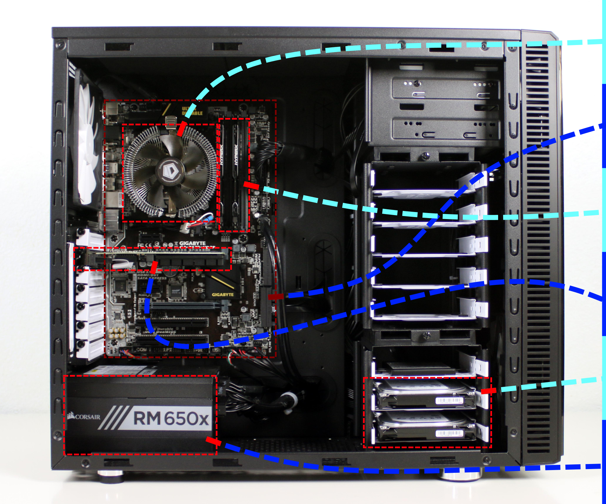

Alle PCer er bygd opp av forskjellige ulike komponenter. En PC er hovedsakelig bygget opp av 6 komponenter.
Her er en liten oversikt over komponentene og hva de gjør:
Prosessoren er kjernen av datamaskinen. Det er den som tar imot og lagrer instruksjoner og dataer som skal bearbeides over til RAM (systemminne). Den utfører instruksene den blir gitt og regner seg frem til et resultat. Dette resultatet blir sendt videre til RAM (systemminne) eller til en annen komponent som trenger denne informasjonen, f.eks et skjermkort.
Prosessoren er derfor ofte kalt hjernen, for den tenker ut og gir ut informasjon til de andre komponentene. Selve prosessorchippen er plassert sentralt på hovedkortet, under en eller annen form for kjøling, for den blir gjerne ganske varm.
I dag er det AMD og Intel som produserer prosessorer til datamaskiner. Den nyeste generasjonen til Intel er 13ende generasjon Intel Core og den nyeste til AMD er Ryzen 7000 serien. Et eksempel på en god CPU for gaming og utvikling er Intel Core i7 13700k, og for hverdagsbruk Intel Core i3 12100.
Hovedkortet er det største og mest viktige kretskortet i en datamaskin. Det kobler sammen alle komponentene slik at de kan arbeide sammen.
Alt av I/O (Utganger) er også koblet direkte til hovedkortet, slik at data kan bli sendt inn og ut fra enhetene du har koblet til.
Både Intel og AMD har sine egne hovedkort som har et sokkel for sine prosessorer.
RAM er korttidsminne til datamaskinen. Det lagrer all data som jobbes med i sanntid. Systemminne er mye raskere enn en vanlig lagringsenhet, som gjør prossesen som sender sanntidsinformasjon frem og tilbake fra cpuen mye mer effektiv.
I dag anbefales det å ha 8GB ram hvis man skal bruke PCen til hverdagsbruk, og 16GB om man multitasker en del eller spiller dataspill. 32GB kan være nyttig hvis du er en utvikler som trenger mye datakraft og har mange programmer oppe samtidig.
Skjermkortet er den komponenten som gir skjermen din inndata, så du ka se hva som skjer på PCen. Det omgjør logisk informasjon om bildet det skal vise om til et signal som det sender videre til skjermen.
Det finnes både integrerte og dedikerte skjermkort. Et integrert skjermkort er oftest mye tregere enn et dedikert skjermkort, men er fortsatt godt nok for enkle oppgaver uten mye grafikkintesitet. Dedikerte skjermkort er i bruk i PCer som skal behandle tyngre grafiske oppgaver, som videoredigering eller spill.
I dag er det tre selskaper som produserer dedikerte skjermkort. Disse tre er Intel, AMD og NVIDIA.
Lagringsenheten tar vare på alt av langtidsinformasjon. Det er der alle dataene om er lagret på datamaskinen ligger.
I dag bruker man både SSDer og hard-disker for å lagre data. Det har blitt mer og mer vanlig med SSDer fordi de har blitt mye billigere, og de er mye raskere og mer pålitelig en en tradisjonell hard disk. En hard disk er fortsatt billigere per gb, men man bør aldri bruke den som oppstartsdisk til operativsystemet ditt, for da vil PCen din føles treg.
Strømforsyningen er enheten som tilføyer strøm ut til alle komponentene i PCen. I bærbare PCer ville dette vært et batteri.

En vanlig hjemmePC i dag trenger ikke mer enn en 350 watt strømforsyning. Har du en kraftigere PC med et dedikert skjermkort, vil du trenge mer enn det (500 - 1000 watt avhengig av skjermkortet og prosessoren din).
Laget av Simon Johnsen, 1IKA, Porsgrunn VGS.
Tilbake til SimonSiden